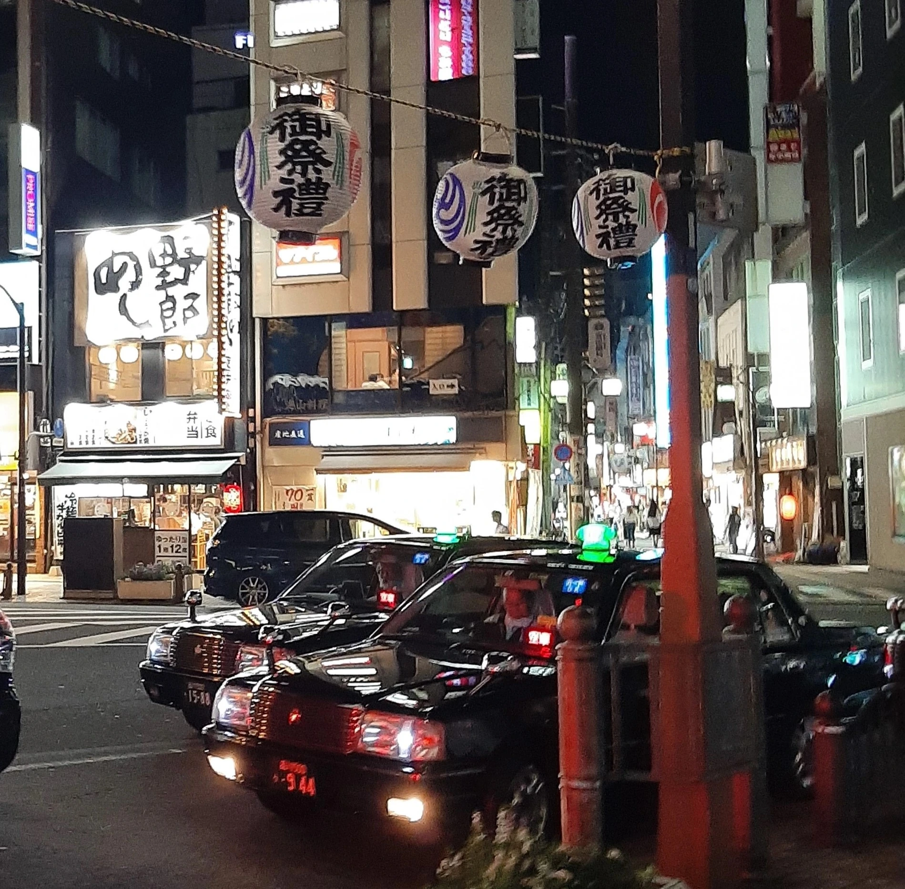
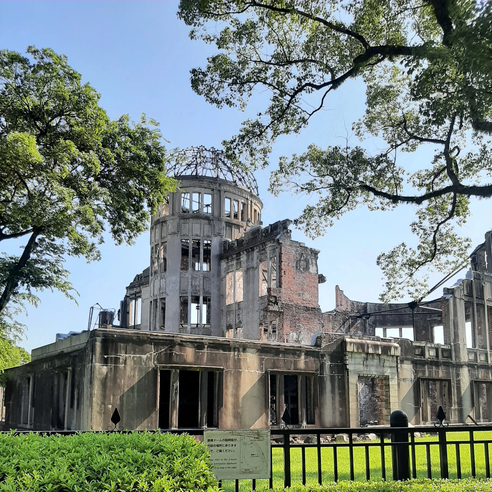
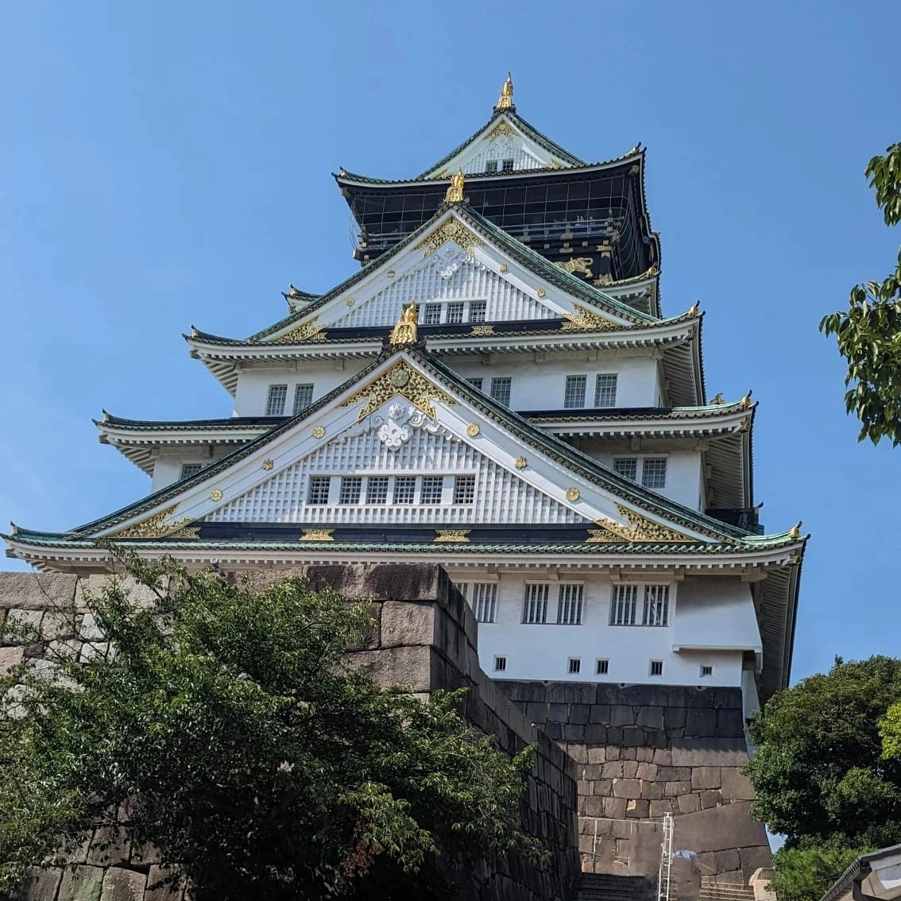

Location 1: Tokyo
Tokyo, the most populous metropolis, also the capital city of Japan, is home to over 37 million residents. It's the largest city in the world offering captivating history, culture and cutting-edge technology.
During my visit to Tokyo, I noticed that the residential buildings (homes + Airbnbs) were quite small. One of the most striking features of the city was the abundance (and variety!) of vending machines. They were littered all around the city, offering items such as hot + cold coffee, and even food like ramen! Interestingly, I read that there is approximately one vending machine for every 23 people in Tokyo.
Location 2: Hiroshima
When we visited Hiroshima, I remember there were a lot of questions about whether the area was still radioactive and if our health would be in danger (don't worry, we're all doing fine). We traveled from Tokyo to Hiroshima on the Shinkansen bullet train, which honestly, was an experience in itself. The hedges surrounding the area of the atomic dome (which I believe is called the Genbaku Dome-mae in Japanese) were buzzing with what sounded like artificial crickets because the noise was so intense! It was also extremely hot, which made exploring quite challenging (and I'm pretty sure I suffered a mini-heatstroke there!)
What to do in Hiroshima.Location 3: Osaka
Unfortunately, I was unable to visit Osaka as I was feeling awful, likely from a mini-heatstroke. The images I recieved made me incredibly jealous—because the castle looked stunning. Osaka Castle was the one location I was really looking forward to, especially since I had planned the trip's itinerary. It had captured my attention as one of Japan's most famous landmarks, with a rich history dating back to the 16th century! (It was built in 1597).
What to do in Osaka.